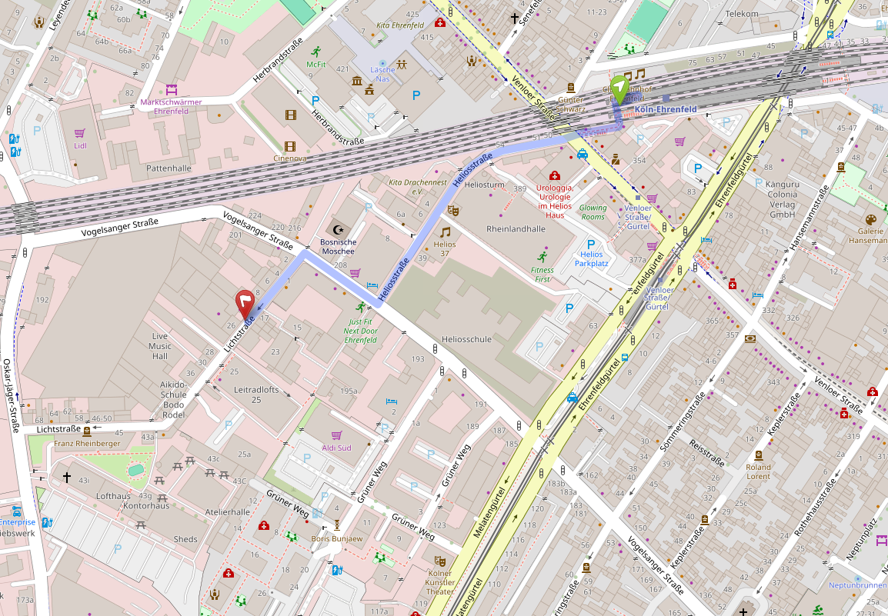

ESC drücken zum Schließen
Wir laden alle Interessierten herzlich zu unseren offenen Community-Treffen ein.
Egal ob du schon Teil unserer Community bist oder einfach neugierig – bei uns bist du willkommen!
Generell findet unser Treffen an jedem zweiten Montag im Monat statt.
Eine Teilnahme ist unverbindlich, ohne Anmeldung und ohne Teilnahmegebühr möglich.
Datum: Montag, 09. März 2026
Uhrzeit: 19:00 – 21:00 Uhr (weiches Ende)
Location: Therapiezentrum im Lichthof, Lichtstraße 21, 50825 Köln-Ehrenfeld
| Startzeit | Ereignis | Ort |
|---|---|---|
| Ca. 18:45 Uhr | Ankommen, runterkommen, Platz finden | Küche / Essraum im Erdgeschoss |
| Ca. 19:10 Uhr | Vorstellung und Themenfindung in großer Runde | Küche / Essraum im Erdgeschoss |
| Ca. 19:40 Uhr | Austausch zu Themen in Kleingruppen | Räume im Erdgeschoss und im 1. OG |
| Ca. 20:20 Uhr | Optionaler Themenwechsel | Räume im Erdgeschoss und im 1. OG |
| Ca. 21:00 Uhr | Zusammenkunft und Abschlussrunde | Küche / Essraum im Erdgeschoss |
| Ca. 21:30 Uhr | Verlassen der Räumlichkeiten | Küche / Essraum im Erdgeschoss |
Unsere Treffen beginnen offiziell um 19:00 Uhr, du kannst aber schon gegen 18:45 Uhr ankommen, runterkommen und deinen Platz finden.
Der erste Teil unserer Treffen findet in der Küche und dem Essraum im Erdgeschoss statt.
Dort kannst du dir die Informationen zum Ablauf auf den Aufstellern nochmal durchlesen und dir gerne ein Namesschild mit deinem
Namen und deinen Pronomen machen. Beispielsweise: Dirk (er/ihm)
Falls du Austausch zu einem konkreteren Thema suchst, kannst du es dir bereits vor Beginn überlegen.
Suche dir dann noch einen für dich passeneden Sitzplatz aus.
Um ca. 19:10 Uhr beginnen wir mit der Vorstellungsrunde, das Moderations-Team erzählt dann nochmal kurz etwas über die
Beweggründe der Treffen, den Ablauf und unsere Gesprächsregeln.
Im Anschluss darf sich jeder kurz vorstellen, z. B.: Name, Pronomen, Wohnort und woher du das Treffen kennst.
Falls du einen Vorschlag für ein Thema hast, darfst du ihn hier ebenfalls gerne einbringen. Es wird ein Zettel herumgegeben, auf dem die Fragen auch nochmal stehen. Desinfektionsmittel steht bereit.
Die Themen werden gesammelt, notiert, und nach der Vorstellungsrunde inhaltlich strukturiert, sodass sich möglichst geeignete themenbezogene Kleingruppen bilden können.
Wir teilen uns dann in diesen Gruppen auf verschiedene Gesprächsräume auf. Du darfst frei entscheiden, welcher Gruppe
du beitreten möchtest. Es ist jederzeit möglich ein Thema, einen Raum oder das Get-Together zu verlassen. In einen anderen Raum
zu wechseln ist allerdings nur zur Halbzeit möglich, um die Gespräche nicht zu stören. Etwa zur Halbzeit geht eine Person rum und gibt ein entsprechendes Signal.
Ab 21:00 Uhr kommen wir nochmal alle im Erdgeschoss zusammen für finale Impulse und eine Verabschiedung.
Helfende Hände zum aufräumen sind gerne gesehen, bis wir gegen 21:30 Uhr die Räumlichkeiten wieder verlassen.
Zur Vorstellung und Verabschiedung kommen etwa 25 bis 35 Personen zusammen.
Wir bemühen uns um einen Safer Space: kein Raum für Diskriminierung.
Wenn jemand etwas noch nicht wusste oder eine Annahme falsch war, ist Neugierde und das Interesse, dazu zu lernen, ausdrücklich willkommen.
Unsere Treffen finden in den Räumlichkeiten des Therapiezentrums Lichthof statt, die uns freundlicherweise zur Verfügung gestellt werden.
Anfahrt mit öffentlichen Verkehrsmitteln: 
Buslinien 141, 142, 143: Haltestelle "Venloer Str./Gürtel"
Straßenbahnlinien 3, 4 und 13: Haltestelle "Venloer Str./Gürtel"
S-Bahn-Linien S12, S19 und Regionalbahnen RE1, RE8, RB27, RB38: Haltestelle "Köln-Ehrenfeld"
Parkmöglichkeiten sind vor Ort begrenzt vorhanden, es handelt sich um öffentliche Parkplätze entlang der Straße.
Direktlink zu Google Maps
Wegbeschreibung vom Bahnhof Ehrenfeld von OpenStreetMap.org:
ESC drücken zum Schließen
Snacks und Getränke können gerne selbst mitgebracht werden und auch geteilt werden.
Vorort gibt es einen Kühlschrank mit Getränken, diese kosten 2€ je Flasche und werden per PayPal (QR-Code)
oder bar (Kaffekasse) bezahlt.
Unisex-Toiletten findest du im Keller und im 1. OG.
Bei Fragen wende dich Vorort gerne jederzeit an das Moderations-Team
oder per Mail an kontakt@neurospicykoeln.de.
Spenden an unsere Initiative sind herzlich willkommen.